Pediatric Oncology Treatment in Bangalore
Pediatric oncology is the specialised care of babies, children and teenagers with cancer and serious blood disorders. Childhood cancers are rare, but most of them respond very well to treatment, and many children are cured.

Overview
What is pediatric oncology?
Pediatric oncology is the branch of medicine that diagnoses and treats cancer in babies, children and teenagers, usually from birth up to 18 years of age. A pediatric hemato-oncologist treats both childhood blood cancers and blood disorders.
With the right pediatric oncology treatment in Bangalore, children can finish treatment and go back to school, play and a normal life. Dr. Neema Bhat, a US board-certified pediatrician and pediatric hematologist-oncologist with 10+ years of experience, treats childhood blood cancers, solid tumours and blood disorders, including bone marrow transplant.
About 3 out of every 100 cancer patients in India are children under 15, and leukemia makes up about 40% of childhood cancers (Indian Pediatrics study). In high-income countries, more than 80% of children with cancer survive (WHO). Early diagnosis and expert care help Indian children get the same chance.
Childhood cancers are different
- They usually start in growing cells, such as the blood, brain, kidneys, nerves, bones and muscles.
- They are rarely linked to lifestyle, such as diet or smoking.
- They often grow fast, but they also usually respond well to treatment.
- Treatment doses and medicines are planned for a child’s age, weight and growing body.
Children are not small adults. They need a team trained to care for their bodies, their development and their emotions, along with support for the whole family.
Warning signs
Warning signs of cancer in children
Most of these signs are caused by common, harmless illnesses. But if a sign lasts more than two weeks, keeps coming back, or gets worse, see a doctor. Watch for:
- Paleness & tirednessPaleness, tiredness or weakness that does not go away
- Easy bruisingSmall red spots on the skin, or unusual bleeding (nose, gums)
- Repeated feverFever or infections that keep coming back without a clear cause
- A lump or swellingIn the tummy, neck, armpit, groin or any part of the body
- Swollen glandsThat do not shrink after a few weeks
- Bone or joint painLimping, or pain that wakes the child at night
- Morning headachesHeadaches, especially in the morning, with vomiting
- Changes in walkingBalance, vision or behaviour, or new fits (seizures)
- Eye changesA white glow in the pupil in photos, a new squint, or eye swelling
- Weight lossLoss of appetite or night sweats
- Swollen tummyA swollen or hard tummy
- In teenagersA painless lump in the testicle
See a doctor urgently if your child has a high fever with very pale skin or bleeding, breathing difficulty, severe headache with vomiting, a fit, sudden weakness of the legs, or is unusually drowsy.
What causes cancer in children?
In most children, the cause of cancer is not known. Childhood cancer usually starts from random changes (mutations) in the genes of growing cells. It is not caused by anything the parents did or did not do, and it is not contagious. A small number of children have a higher risk because of:
- Inherited genetic conditions: such as Down syndrome (higher risk of leukemia), Li-Fraumeni syndrome, neurofibromatosis and hereditary retinoblastoma
- A family history of retinoblastoma or certain inherited cancer syndromes
- Some immune system disorders that are present from birth
- Previous cancer treatment: chemotherapy or radiation given for an earlier cancer
- Certain infections: such as Epstein-Barr virus (EBV), linked to some lymphomas, and HIV
Because most childhood cancers cannot be prevented, early diagnosis is the most important step for a good outcome.
Why early treatment matters
Childhood cancers often grow quickly, so a delay of even a few weeks can change the outcome. If cancer in a child is not treated early:
- The cancer can spread to other organs, making it harder to treat.
- Serious complications can develop, such as severe infections, bleeding, kidney problems or pressure on the brain or spinal cord.
- More intensive treatment may be needed, which can increase the risk of long-term side effects.
- The chance of cure drops, especially for leukemia, retinoblastoma and solid tumours.
- Vision, limbs or organs may be lost in cancers like retinoblastoma and bone tumours that could otherwise be saved.
The good news: when found early and treated at a specialised centre, most childhood cancers can be controlled, and many can be cured.
Conditions
Childhood cancers and blood disorders we treat
| Condition | What it means in simple words |
|---|---|
| Acute lymphoblastic leukemia (ALL) | The most common childhood cancer. Abnormal white cells fill the bone marrow. Most children are cured with treatment. |
| Acute myeloid leukemia (AML) and chronic myeloid leukemia (CML) | Other blood cancers that start in the bone marrow. |
| Hodgkin and non-Hodgkin lymphoma | Cancers of the lymph nodes and immune system, often showing as painless swollen glands. |
| Brain and spinal cord tumours | Growths in the brain or spine that can cause headaches, vomiting, or problems with walking or vision. |
| Neuroblastoma | A tumour of nerve cells, often in the tummy, mostly in children under 5. |
| Wilms tumour (nephroblastoma) | A kidney tumour in young children, often found as a swelling in the tummy. |
| Retinoblastoma | An eye cancer in babies and young children, often seen as a white glow in the pupil. |
| Bone tumours (osteosarcoma, Ewing sarcoma) | Cancers of the bone, usually in older children and teenagers, causing pain or swelling. |
| Rhabdomyosarcoma and other soft tissue sarcomas | Cancers of the muscles and soft tissues. |
| Hepatoblastoma | A liver tumour in young children. |
| Germ cell tumours | Tumours of the ovaries, testes or other parts of the body. |
| Histiocytic disorders (LCH, HLH) | Rare conditions where certain immune cells grow or act abnormally. |
| Childhood blood disorders | Thalassemia, sickle cell disease, aplastic anemia, ITP, hemophilia and severe anemia. |
Diagnosis
How is childhood cancer diagnosed?
Dr. Neema Bhat chooses tests based on your child’s symptoms and age. Painful tests are done under sedation or anaesthesia so that your child is comfortable. Tests may include:
- 01Physical examination and history
Including growth, development and family history.
- 02CBC and peripheral smear
Check blood counts and look for abnormal cells.
- 03Blood chemistry tests
Kidney and liver function, LDH, uric acid and electrolytes.
- 04Tumour markers
Such as AFP, beta-hCG and urine catecholamines for certain tumours.
- 05Bone marrow aspiration and biopsy
To diagnose leukemia and check if other cancers have spread to the marrow.
- 06Flow cytometry
Identifies the exact type of leukemia or lymphoma.
- 07Cytogenetics, FISH & molecular tests
Find genetic changes that guide treatment and predict risk.
- 08Imaging
Ultrasound, X-ray, CT, MRI or PET-CT to find the tumour and check its spread.
- 09Biopsy
A small sample of the tumour or lymph node is examined to confirm the diagnosis.
- 10Lumbar puncture (spinal tap)
Checks whether cancer cells are in the fluid around the brain and spine.
- 11Eye examination under anaesthesia
For suspected retinoblastoma.
- 12Heart, hearing and kidney tests
Before treatment, as a baseline.
Treatment
Pediatric oncology treatment options
Treatment depends on the type of cancer, its stage and risk group, the child’s age and overall health. Most children receive a combination of treatments, planned by a team of specialists.
Risk-adapted chemotherapy
Anti-cancer medicines given in planned cycles, with doses based on the child’s risk group, weight and age. Many cycles can be given as daycare treatment.
Targeted therapy
Medicines that attack specific changes in cancer cells, such as in some leukemias.
Immunotherapy
Monoclonal antibodies and other treatments that help the immune system fight cancer cells.
CAR-T cell therapy
For selected children with relapsed leukemia or lymphoma, where suitable and available.
Surgery
To remove solid tumours such as Wilms tumour, neuroblastoma, liver and bone tumours, including limb-sparing surgery for bone cancers.
Radiation therapy
Carefully planned radiation for certain tumours, using techniques that protect healthy growing tissue.
Bone marrow (stem cell) transplant
Autologous or donor transplant for high-risk or relapsed leukemia, neuroblastoma and other cancers, and for blood disorders like thalassemia and aplastic anemia. Learn more
Central line or port
A long-term line to give medicines and take blood without repeated needle pricks.
Supportive care
Transfusions, prevention and treatment of infections, anti-sickness medicines and fertility preservation counselling for teenagers.
Pain management & palliative care
To keep the child comfortable at every stage of treatment.
Nutrition support
A diet plan to maintain weight and strength during treatment.
Psychological and child-life support
Counselling and play therapy for the child, brothers and sisters, and parents.
Long-term follow-up
Survivorship care: regular checks for growth, learning, heart, hormone and fertility effects after treatment ends.
Never stop or change treatment on your own, even if your child looks well. Completing the full treatment plan gives the best chance of cure.
Caring for your child during and after treatment
Parents play a big part in their child’s recovery. These steps help:
- Prevent infections: wash hands often, keep the child away from people with fever, cough or chickenpox, and keep the central line or port clean and dry.
- Check for fever: a temperature of 100.4°F (38°C) or more during treatment is an emergency. Go to the hospital straight away.
- Give safe food: freshly cooked, hot home food and boiled or filtered water. Avoid street food, raw salads and cut fruit kept outside.
- Encourage eating and drinking: small, frequent meals help when appetite is low.
- Look after the mouth: gentle brushing with a soft brush and regular mouthwash as advised.
- Follow the vaccine schedule your oncologist gives. Live vaccines are usually avoided during treatment.
- Keep life as normal as possible: play, schooling (at home or in school, as allowed) and time with family support your child’s emotional health.
- Look after yourself too: talk to the care team, counsellors and other parents for support.
- Keep every follow-up visit after treatment ends. Survivorship care checks growth, learning, heart, hormones and fertility for years.
Most children who finish treatment return to school and grow up to lead healthy, active lives.

About the doctor
Dr. Neema Bhat
- SpecialityHematologist, Pediatric Oncologist & Bone Marrow Transplant Specialist
- EducationMD (USA) · Fellowship (FAAP) in Pediatric Hematology, Oncology & Bone Marrow Transplantation, Penn State Health, USA
Dr. Neema Bhat is a Haemato-Oncologist in Bangalore with more than ten years of experience treating blood disorders and blood cancers in children and adults. For children, she cares for the whole child, not only the cancer, with clear explanations for parents and support at every stage.
FAQs
Quick answers to the questions parents ask most about childhood cancer.
01Who is the right doctor for cancer in children in Bangalore?
A pediatric oncologist or pediatric hemato-oncologist is the right specialist. Dr. Neema Bhat is a US board-certified pediatric hematologist-oncologist in Bangalore who treats childhood cancers and blood disorders.
02What is the most common cancer in children?
Leukemia, especially acute lymphoblastic leukemia (ALL), is the most common childhood cancer. In India, lymphomas and brain tumours are the next most common.
03Can childhood cancer be cured?
Yes, many childhood cancers can be cured. In high-income countries, more than 80% of children with cancer survive. Results are best when treatment starts early at a specialised centre and is completed fully.
04What are the early signs of cancer in children?
Common signs are paleness, easy bruising, repeated fever, a lump or swelling, bone pain, morning headaches with vomiting, and a white glow in the eye. See a doctor if any sign lasts more than two weeks.
05Did I cause my child’s cancer?
No. Most childhood cancers happen because of random gene changes in growing cells. They are not caused by anything parents did or did not do.
06How long does childhood cancer treatment take?
It depends on the cancer. Some solid tumours are treated in 6 to 12 months. Treatment for ALL usually takes about 2 to 3 years, though most of it is given as outpatient care.
07Will my child need to stay in hospital throughout treatment?
No. Children stay in hospital for some intensive phases, but much of the treatment is given as daycare or outpatient care, and children live at home.
08Can my child go to school during cancer treatment?
Many children can go back to school during the less intensive phases of treatment, when blood counts are safe. Your doctor will advise when it is safe.
09What are the side effects of chemotherapy in children?
Common side effects are hair loss, nausea, mouth sores, tiredness and a higher risk of infections. Most go away after treatment, and the care team helps manage them.
10Will treatment affect my child’s growth or future fertility?
Some treatments can affect growth, hormones or fertility. The team plans treatment to reduce these risks, discusses fertility preservation for teenagers, and checks for late effects during follow-up.
Worried about a sign in your child?
Or need a second opinion on a diagnosis? Early care makes a difference. Book a consultation for pediatric oncology treatment in Bangalore with Dr. Neema Bhat today.
- +91 78997 56677 · Call or WhatsApp
Medical disclaimer: This page is for general information only and is not a substitute for medical advice. Please consult a doctor for diagnosis and treatment.